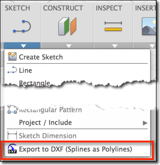
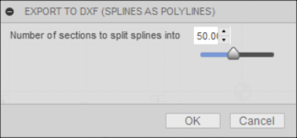
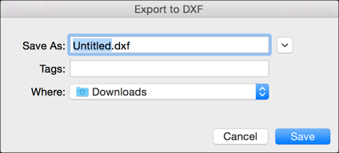

Fusion 360 add-in that lets the user export the currently active sketch to a DXF file with the splines converted to polylines in it.
To use the add-in, click the following command
Once installed, the "DXF Spline To Polyline" add-in will create a new button in the menu of the
"Model" workspace's "Sketch" panel.

Some laser cutters do not work with splines.
In order to avoid having to open the DXF in another product to do the conversion, this add-in does it for you.
When you run it it will ask you for the number of sections it should divide each spline into:

After that you can provide the path and filename of the DXF file that the sketch geometry will be exported to

You can unload the add-in without uninstalling it by clicking the
"Stop" button when the add-in is selected in the list box on the "Add-Ins"
tab of the "Scripts and Add-Ins" dialog.
Unchecking "Run on Startup" causes the add-in not to be loaded in future sessions of
Fusion 360.
The source code for this add-in written in Python is available inside the add-in's folder or on GitHub
This add-in was written by Xiaodong Liang.
Xiaodong is a Developer Advocate at Autodesk, working as part of the Autodesk Developer Network program.
Email us at fusion.apps@autodesk.com with feedback or requests for enhancements.